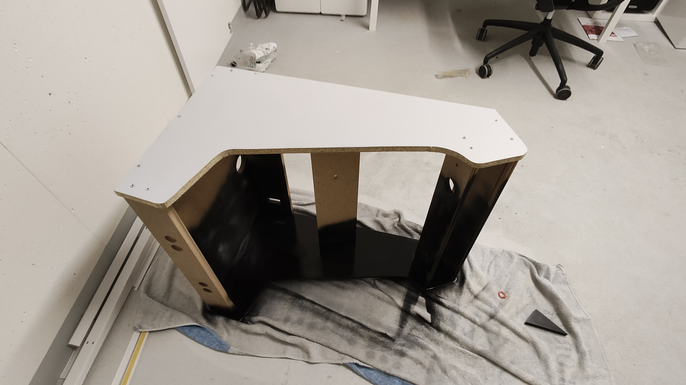
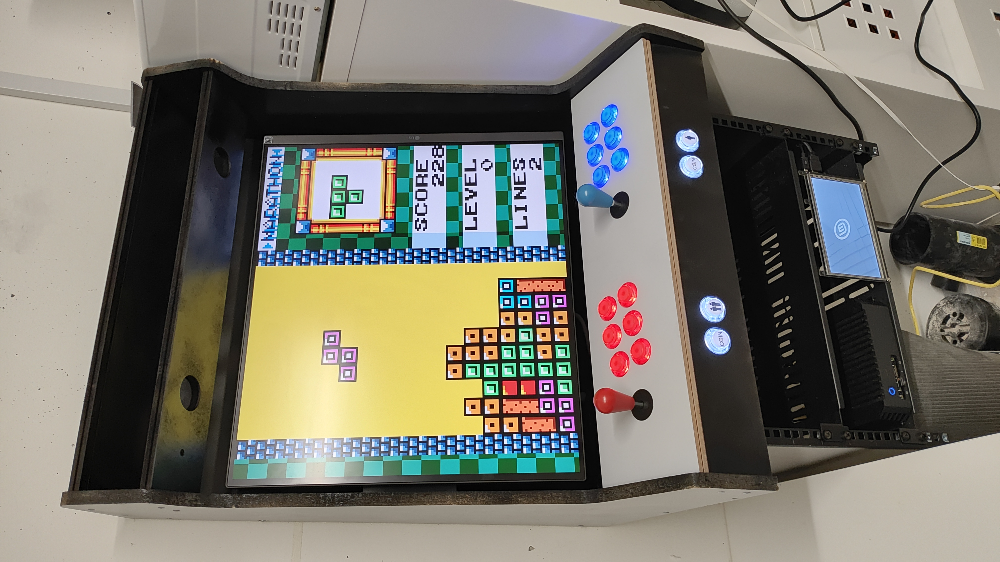

DualUp Arcade
Most "retro" arcade kits seem to be designed to have a monitor mounted "horizontally", while "real" arcades in the 80s typically had the monitor mounted vertically.
For being able to play "modern" games, original arcade games and retro console titles, the LG DualUp monitor, which has a nearly square form factor, seemed to be an ideal compromise.
Construction
As a starting point for this project, I ordered the 24" tabletop arcarde kit from Talentec. When the kit arrived, it was immediately obvious that there was no way to fit the DualUp in there (which is consistent with the maximum monitor height in the Talentec specs).

Fortunately, I had still two 50x80cm plywood sheets lying around from a previous project. I used the original Talentec as a template for drawing the outline of the top and bottom on my spare plywood sheets, then connected the top and bottom with a straight line. I also transferred the postions of the holes using a thin pencil.
Following the wide turns with a jigsaw was relatively straightforward.
Ater a bit of sawing and drilling, I was able to connect my "custom" side parts with the remaining parts from the original Talentec kit.
| The Talentec kit came with a MDF bar for holding the monitor using it's VESA mounting points. | For comparison: The original Talentec side panel in front of my "custom" side panel. |
This was enough to install the monitor and try the setup with an old mini PC, on which I installed Linux Mint for this project. Steam works, too! :)
I painted the sides gray...
...and the rest black.
To mount the Arcade, I am using a StarTech 19" rack that could be mounted to the wall. There is some unused piping at ground level where I intended to place the Arcade, and a rack seemed like a good place for the mini PC and accessories.
For the buttons and joysticks, I ordered a cheap set from Amazon that included small boards converting the controller signals to USB

The controls and boards were straightforward to mount to the removable controller panel that came with the arcade kit.
|  |
Time for some Games! Now, only the loudspeakers, marquee and T-/U-molding are missing. The DualUp form factor is a perfect fit for GBC titles.
| T-molding, loudspeakers and amplifier installed -- only the marquee and U-molding are still missing. | The finished product running a well-known arcade classic. |
Software Setup
Initially, I was planning to use a Raspberry Pi 4 with Batocera. Unfortunately, I wasn't able to get reasonable frame rates, which I attributed to the (relatively) high resolution of the monitor.
So instead of a "all in one" solution like Batocera, I installed Linux Mint and then installed Steam and EmulationStation on top and I am quite happy with this setup.
List of Parts
I am linking the sources where I bought the parts; if you are not based in Switzerland, you'll probably prefer different sources for similar projects.
- Talentec Arcade Tabletop kit
- LG DualUp Monitor
- Two 50x80cm plywood panels
- Talentec Sound kit
(I didn't use it in the end because I wanted to utilize an old amplifier I had lying around, but I would recommend the original Telentec kit because it just fits best with the Arcade) - Talentec U-molding and T-molding
- An old Tranquil Mini PC that I still had "lying around".
- Wall-Mounted StarTech 19" Rack
- 19" Drawer (for the keyboard)
- A "No name" Arcade button set found on Amazon
- 19" socket strip
- StarTech 19" rack shelf